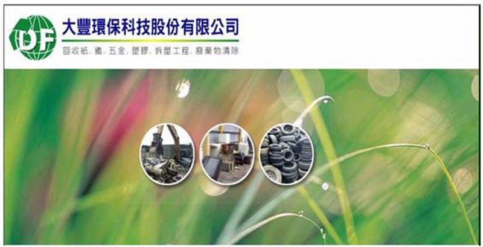
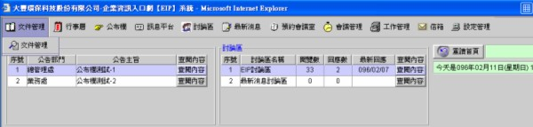
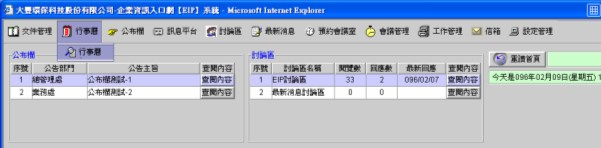
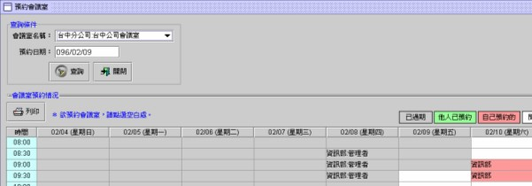
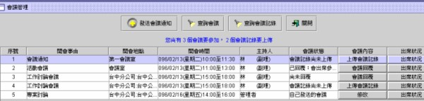
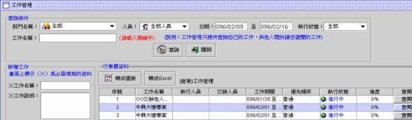
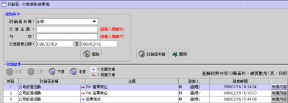
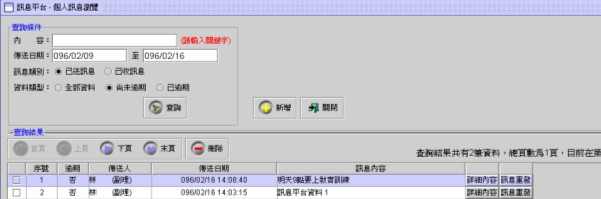
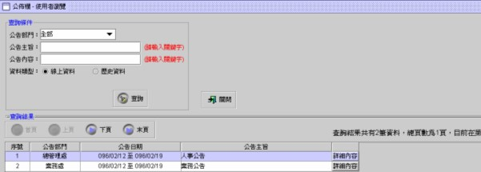
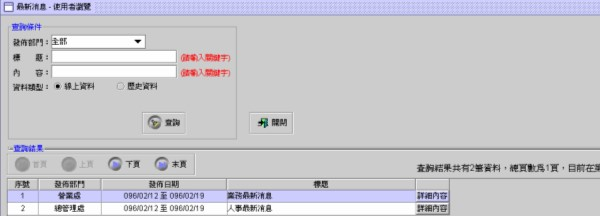

》 代表性客戶。公司簡介
大豐環保創立於2001年初，由創辦人林盟洲先生結合了一群志同道合的環保戰士，在彰化市金馬路經營本公司第一家回收站。
有鑑於資源短缺現象日益嚴重，但資源回收產業卻仍然維持相當的管理與經營模式，為提昇產業競爭力，所以導入企業化經營；陸續於全省北、中、南設置近廿個回收站，並持續擴展中；為達到更有效率的管理，積極導入電腦化系統，並於2004年將各式車輛裝置衛星即時追蹤系統(GPS) ；且為了讓回收站跳脫以往髒亂不堪的傳統印象，積極推動回收站形象改造工程，兼具美化環境與人性關懷、教育宣導的作用，不但是社區特色，更是資源回收業界典範
文件管理

管理者事先會設定每位員工在文件管理可維護或可瀏覽的資料夾，所以每個人進入文件管理畫面時，所看到的資料夾都會不一樣。文件管理提供〈新增資料夾〉、〈上傳檔案〉與〈刪除〉檔案…等功能。
行事曆

行事曆提供您記錄每天的工作行程與計畫，畫面上會顯示您的姓名，另外還提供下述功能： 妇開放自己的行事曆給特定人員查閱，例如：開放給部門主管，方便主管安排相關工作。 专開放自己的行事曆給特定人員設定，例如：開放給助理或主管來安排工作。 将如他人有開放讓您瀏覽時，您就有權限瀏覽此人的行事曆資料。 屉如他人有開放讓您設定時，您就有權限設定此人的行事曆資料。
預約會議室

當您需要會議室開會或討論工作時，可先利用預約會議室系統來查看您所需的會議室是否有空，如該時段已被其他部門預約時，畫面上會顯示預約者的部門與姓名資料。
會議管理

如您需要召開會議時，可利用此功能發送會議通知與查閱會議紀錄的資料，所以會議管理系統所提供的功能如下： 妇
發送會議通知：會議連絡人可發送與修改會議通知，在會議發送成功時，系統會自動寄發 會議通知 Email 給相關的出席人員。
回覆會議通知：出席人員在收到會議通知Email時，會至會議管理系統回覆是否參加會議。
查閱與維護會議記錄：會議記錄人員可以上傳與修改會議記錄的資料，會議出席人員與被 指定的人員可瀏覽下載會議記錄的資料。
工作管理

工作管理系統可提供工作分派，工作進度追蹤，與工作狀況掌握等，例如：主管可分派工作給下面的員工，然後再利用工作管理系統掌握工作進度，來調整各員工的工作，所以工作管理系統所提供的功能如下： 妇
交辦給他人：可建立工作資料分派他人來執行，同時也可追蹤每一個人的工作進度資料， 如快到期或已超過工作期限時，可利用稽催功能通知執行人員回報狀況。
他人交辦給我執行：在執行過程中，要隨時回報其目前工作的進度與狀況，讓交辦人可以 掌握工作的進度。
開放他人瀏覽工作：可將自己的相關工作開放給他人來瀏覽其工作的進度。
討論區

討論區可提供員工對特定的主題發表想法，增加彼此間的意見交流。同時員工也可申請討論區成為版主，來收集大家的想法與意見。
訊息平台

訊息平台可即時傳送您所要傳遞給對方的訊息資料，所以有提供以〈手機簡訊〉與〈寄發Email〉的功能，另外所傳遞出去的訊息也有記錄可以查詢。
公布欄

提供各部門查詢自己部門可查閱的公布欄資料。例如：總管理處今天發了一份公告，查閱部門指定為總管理處與營業處，那就只有總管理處與營業處的人員登入系統時可看到此公告資料，也就是說如果是業務處人員登入系統時，就看不到此公告資料了。
最新消息

提供各部門查詢自己部門可查閱的最新消息資料。例如：總管理處今天發了一份最新消息，查閱部門指定為總管理處與營業處，那就只有總管理處與營業處的人員登入系統時可看到此筆資料，也就是說如果是業務處人員登入系統時，就看不到此筆資料了。